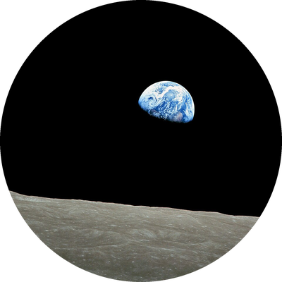
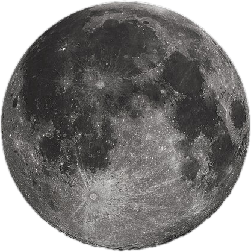
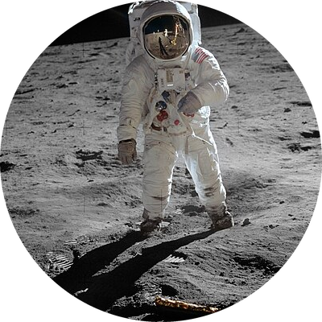

Moon
The Moon is Earth's only natural satellite. It controls our ocean tides and is the only other world humans have walked on.



Facts about Moon
- Diameter: about 3,474 km, roughly one quarter the size of Earth
- Distance from Earth: about 384,400 km
- It orbits Earth every 27.3 days, and the same side always faces us
- Gravity on the Moon is only about one sixth of Earth's
- Temperatures swing from about 127 °C in daylight to -173 °C at night
- The first people landed on the Moon on July 20, 1969 (Apollo 11)